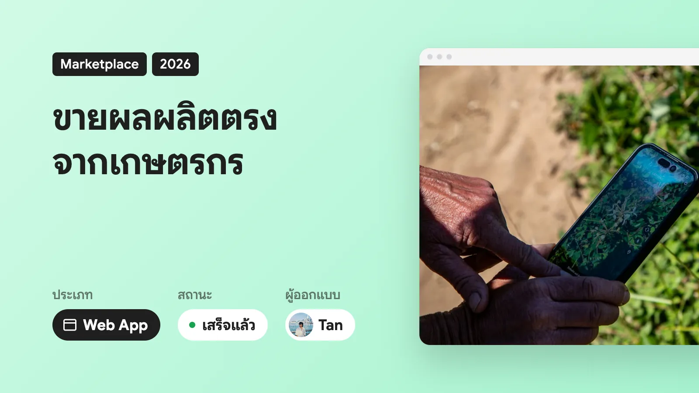
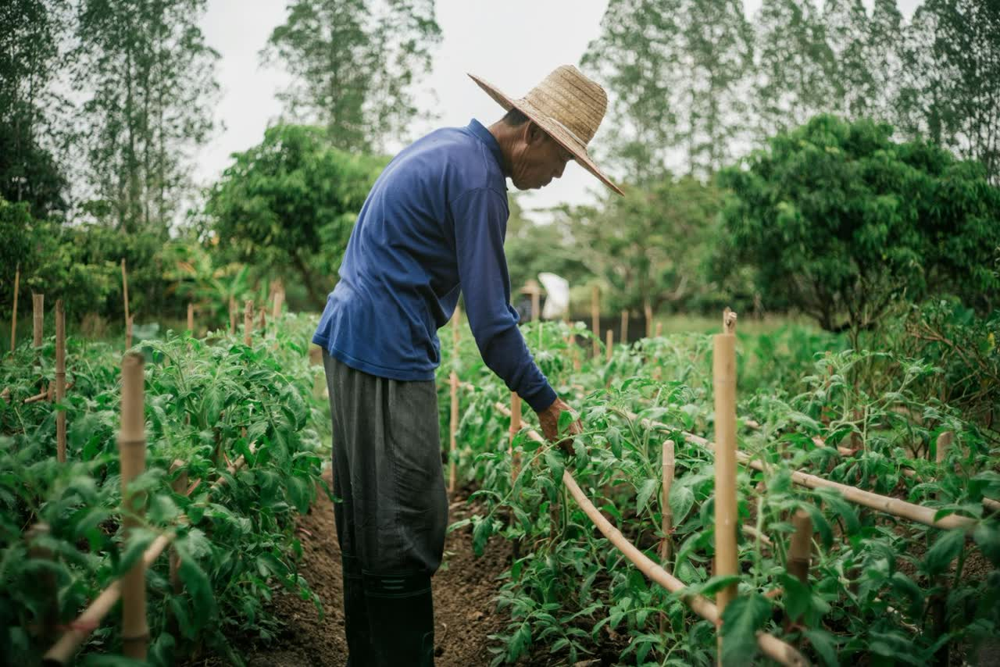
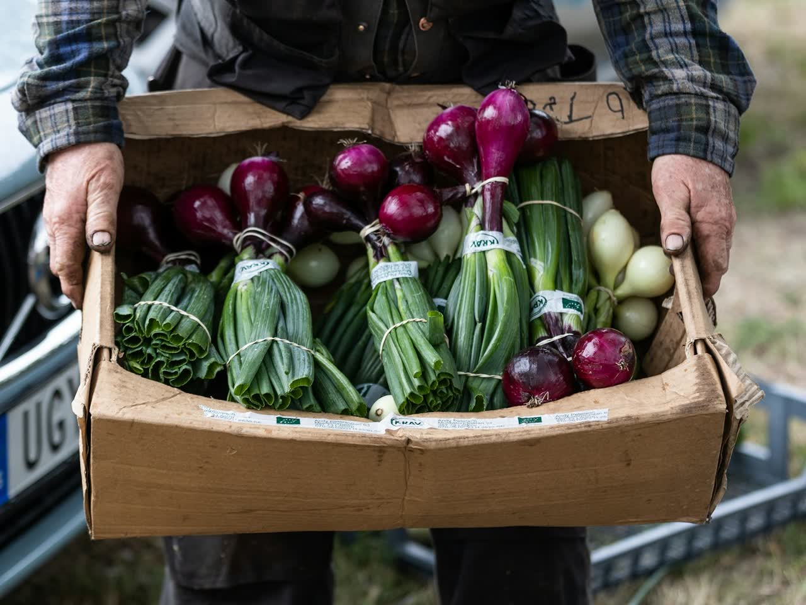
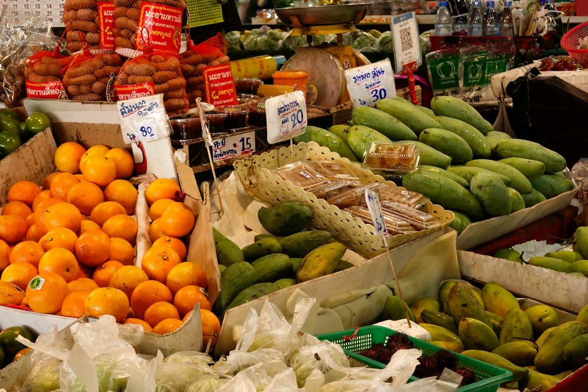
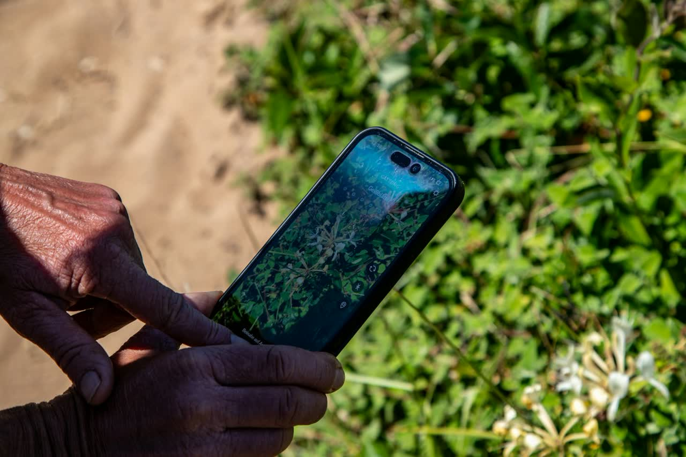
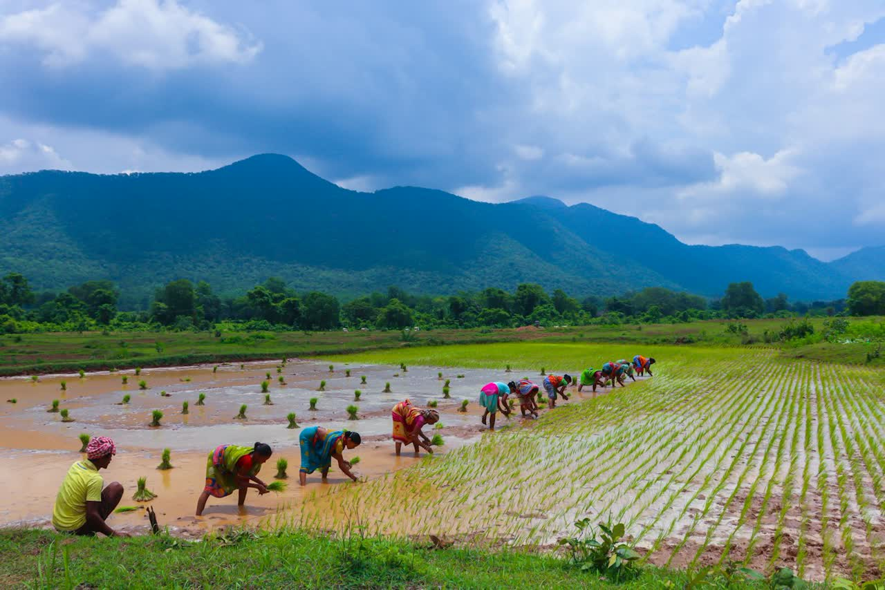

E-Commerce เพื่อเกษตรกรไทย
แพลตฟอร์มเกษตรกร ไม่ใช่แค่ E-Commerce — แต่เป็นการออกแบบ Ecosystem ที่ทุกฝ่ายได้ประโยชน์ ตั้งแต่เกษตรกรไปจนถึงผู้บริโภค

แพลตฟอร์มที่เชื่อมเกษตรกรกับผู้บริโภคโดยตรง — Buyer / Seller / Affiliate / Admin ครบทุก Role ใน 3 เดือน
ปัญหาที่เจอ
ทำไมเกษตรกรไทยถึงต้องมี Platform ของตัวเอง?
เกษตรกรไทยปลูกของดี แต่ขายได้แค่ผ่านพ่อค้าคนกลาง — ผู้บริโภคอยากได้ของสดจากสวน แต่ไม่รู้จะซื้อจากไหน Platform ที่มีก็ไม่ได้ออกแบบมาสำหรับสินค้าเกษตรโดยเฉพาะ

เกษตรกรเข้าไม่ถึงช่องทางขายออนไลน์
Platform อย่าง Shopee/Lazada ซับซ้อนเกินไปสำหรับเกษตรกร — ต้องถ่ายรูปสวย ตั้งค่า Shipping เอง จัดการ Promotion เอง ค่าคอมมิชชันสูง
ผู้บริโภคไม่มั่นใจเรื่องคุณภาพ
ซื้อผักผลไม้ออนไลน์ — ไม่รู้มาจากไหน สดไหม ปลอดภัยไหม ไม่มีระบบรับรองคุณภาพที่น่าเชื่อถือ
พ่อค้าคนกลางกินส่วนต่างเยอะ
ผักจากสวนราคา 20 บาท ถึงมือผู้บริโภคกลายเป็น 80 บาท — เกษตรกรได้น้อย ผู้บริโภคจ่ายแพง ระบบไม่ยุติธรรม
วิธีแก้ปัญหา
สร้าง Ecosystem ที่ทุกฝ่ายได้ประโยชน์
Direct-to-Consumer — ตัดคนกลางออก
เกษตรกรลงสินค้าเอง ตั้งราคาเอง ส่งตรงถึงผู้บริโภค — ได้เงินเต็มเม็ด ผู้บริโภคได้ราคาถูกกว่า
สินค้าตามภูมิภาค + OTOP
แบ่งตามภาค (เหนือ อีสาน กลาง ตะวันออก ตะวันตก ใต้) + สินค้า OTOP — ให้ผู้บริโภคค้นหาของดีประจำถิ่นได้ง่าย
Affiliate System — ชวนคนมาช่วยขาย
ใครก็เป็น Affiliate ได้ แชร์ลิงก์สินค้า ได้ค่าคอมมิชชัน — สร้างเครือข่ายขายแบบไม่ต้องสต็อกของ
Admin Dashboard — ดูแลระบบครบ
จัดการ User, ตรวจสินค้า, ดู Analytics, จัดการ Order — ให้ทีมดูแล Platform ได้อย่างมีประสิทธิภาพ

Architecture Overview
4 Roles, 1 Platform — ออกแบบให้ทุกฝ่ายทำงานร่วมกันได้

สิ่งที่สร้าง — 4 User Roles
แต่ละ Role มี Flow และ Features เฉพาะตัว
Buyer — ผู้ซื้อ
- Browse สินค้า 18+ หมวดหมู่
- ค้นหาตามภูมิภาค 6 ภาค
- Wishlist / Favorites
- Shopping Cart + Checkout
- Order Tracking
- Review & Rating
- OTOP Products Filter
- Account Management
Seller — เกษตรกร/ผู้ขาย
- สร้าง Store Profile
- ลงสินค้า + จัดการ Inventory
- ตั้งราคา + Promotion
- จัดการ Order
- Dashboard ยอดขาย
- ระบุภูมิภาค + OTOP
- จัดการ Shipping
- รายงานรายได้
Affiliate — คนชวนซื้อ
- สมัครเป็น Affiliate
- สร้าง Referral Link
- แชร์สินค้าผ่าน Social
- Dashboard ค่าคอมมิชชัน
- Tracking ยอดคลิก/ซื้อ
- ถอนเงินค่าคอมฯ
Admin — ผู้ดูแลระบบ
- จัดการ User ทุก Role
- ตรวจสอบ/อนุมัติสินค้า
- Analytics Dashboard
- จัดการ Order ทั้งระบบ
- Commission Management
- Category & Banner Mgmt
- Report & Export
- System Settings
Hack กับปัญหา
3 เดือนกับ 4 Roles — ไม่มีอะไรง่าย

4 Roles = 4 เท่าของ Complexity
ทุก Feature ต้องคิดจากมุมมอง 4 คน — Buyer เห็นอะไร Seller จัดการยังไง Affiliate Track ยังไง Admin ดูแลยังไง Screen เดียวอาจต้อง Design 4 Version
3 เดือน ต้อง Ship ทั้ง Platform
Deadline แน่นมาก — ต้อง Prioritize อะไรก่อนหลัง ตัด Feature ที่ไม่จำเป็นออก เน้น Core Flow ที่ทำให้ Business ทำงานได้จริง
User หลากหลาย — ตั้งแต่เกษตรกรถึง Admin
เกษตรกรบางคนไม่คุ้นเคยกับ Tech — UI ต้องง่ายมากๆ แต่ Admin ต้องมี Power Tools ครบ ออกแบบให้ตอบโจทย์ทุกกลุ่มพร้อมกันยากมาก
ประสานงานกับ Dev ให้ทัน Sprint
Design ต้องเสร็จก่อน Dev อย่างน้อย 1 Sprint — ถ้าช้า Dev ไม่มีงานทำ ถ้าเร็วเกินก็อาจต้องแก้ทีหลัง
Strategic Partners
ไม่ได้ทำคนเดียว — แพลตฟอร์มเกษตรกร ร่วมมือกับหน่วยงานภาครัฐที่แข็งแกร่ง
สิ่งที่ทำให้ แพลตฟอร์มเกษตรกร ไม่ใช่แค่ "แอปขายของ" แต่เป็น "โครงสร้างพื้นฐานดิจิทัลเพื่อเกษตรกร" คือการได้ทำงานร่วมกับหน่วยงานภาครัฐจริงๆ — ตั้งแต่กระทรวงเกษตรฯ ไปจนถึงไปรษณีย์ไทยที่ดูแลเรื่อง logistics ทั่วประเทศ
กระทรวงเกษตรและสหกรณ์
สนับสนุนนโยบาย + เชื่อมต่อกลุ่มเกษตรกร
ไปรษณีย์ไทย
Logistics ส่งสินค้าเกษตรทั่วประเทศ
กรมส่งเสริมการเกษตร
ฝึกอบรม + ช่วยเกษตรกรลงทะเบียน
กรมปศุสัตว์
ผลิตภัณฑ์จากปศุสัตว์ + มาตรฐานคุณภาพ
กรมประมง
สินค้าประมง + ควบคุมคุณภาพ
กรมส่งเสริมสหกรณ์
เชื่อมต่อสหกรณ์การเกษตรทั่วไทย
เกษตรกรหลายคนไม่มี smartphone ดีๆ ไม่รู้จะเริ่มขายออนไลน์ยังไง — การมีกรมส่งเสริมฯ ช่วย onboard + ไปรษณีย์ไทยดูแล logistics ทำให้ แพลตฟอร์มเกษตรกร เข้าถึงเกษตรกรได้จริง ไม่ใช่แค่ทำ app แล้วรอ — แต่ลงไปหาเกษตรกรถึงพื้นที่
Key Takeaways
สิ่งที่ได้เรียนรู้จาก แพลตฟอร์มเกษตรกร

Buyer กดสั่งซื้อ 1 ครั้ง → Seller ต้องเห็น notification → Affiliate ต้องได้ค่า commission → Admin ต้อง track ทั้งหมด ถ้าออกแบบทีละหน้าโดยไม่คิด flow ข้ามกัน จะเจอปัญหาทีหลังเยอะมาก — ต้องวาด System Flow ก่อน แล้วค่อย design ทีละหน้า
User จริงคือลุงป้าเกษตรกรที่อาจเพิ่งใช้ smartphone ไม่กี่ปี ตอนแรก Seller Flow มี 8 ขั้นตอน ปุ่มเล็ก ข้อความเป็นศัพท์เทคนิค — พอไป user test กับเกษตรกรจริง ถึงรู้ว่าต้องลดเหลือ 3 ขั้นตอน: ลงทะเบียน → ถ่ายรูปตั้งราคา → รับเงิน แค่นี้พอ
เกษตรกรหลายคนไม่ได้เล่น Facebook ไม่เห็น ads แต่พอกรมส่งเสริมฯ จัดอบรมให้ใช้ แพลตฟอร์มเกษตรกร ถึงพื้นที่ — คนลงทะเบียนทะลัก สิ่งที่ได้เรียนรู้คือ ไม่ใช่ทุก product ต้อง growth hack ด้วย online — บางทีการไปหา user ถึงที่ ทรงพลังกว่า
ตอนแรกอยาก design ทุกอย่าง — wishlist, review, chat, coupon, gamification... แต่ 3 เดือนทำไม่ทัน ต้องเลือก ผลคือได้ Core Flow ที่ใช้งานจริงก่อน (สั่ง → จ่าย → ส่ง) แล้วค่อยเพิ่มที่เหลือ — "ทำน้อยแต่ได้จริง" ดีกว่า "ทำเยอะแต่ไม่เสร็จ"